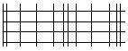
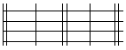

You can check:
Total grid size, see Total Grid Size.
Size of the smallest grid cells for reasons of accuracy, see Smallest Grid Cell.
Maximum aspect ratios are not high for critical cells, see Maximum Aspect Ratios.
Also, see “Debugging the Grid of Large Aspect Ratio Cells”.
In attempting to create as realistic a model as possible, you may be tempted to generate a detailed grid, adding more grid cells than necessary. Approximates for adequate grid modeling requirements are provided by the application examples supplied with your installation or on Support Center:
The smallest grid information, shown in the Grid Summary Dialog, should be used to check that there are no cells smaller than 10-6 × the overall scale for the system being modeled.
For example, for a system which is of the order of 1 m, the smallest grid cell should be larger than 1 micron.
If this modeling rule is ignored, then the grid cell volumes can begin to approach the minimum resolution which can be handled by the computer and serious problems in the solution may occur.
A bad grid, typified by having cells with high aspect ratios, can cause slow or sometimes divergent solver behavior.
For most system-level analysis, aspect ratios exceeding 10:1 are rarely required. For package-level analysis, larger aspect ratios are unavoidable, but should be confined to regions well away from the object(s) of interest.
Also, high aspect ratios on the edges of the solution domain often cannot be avoided and have no detrimental effects on the results, see Figure 1.
Table 1 provides guidelines for aspect ratio levels.
Recommended |
Avoid |
|
|---|---|---|
Grid Distribution |
Smooth transitions between regions: |
Abrupt transitions between regions: |
Maximum Grid Cell Aspect Ratio |
Ideally < 20 |
> 200 |
Minimum Grid Cell Size |
> 10−6 × Domain Size |
< 10−6 × Domain Size |
If large aspect ratios are necessary because of geometry interaction, try to make sure that they occur in regions where the flow is simple and unidirectional, and that no large temperature gradients exist, otherwise you may have solution convergence problems.
For example, consider a single package or device modeled in detail in free air. The ideal grid should focus in towards the device, becoming gradually larger with distance away from the device. Large aspect ratio grid cells can be encountered at some distance away from the device, but this area is usually of little concern and should not have any extreme flow or temperature variations. Localizing the grid can improve the grid further, with a localized grid around the device, aspect ratios at large distances from the device are improved.